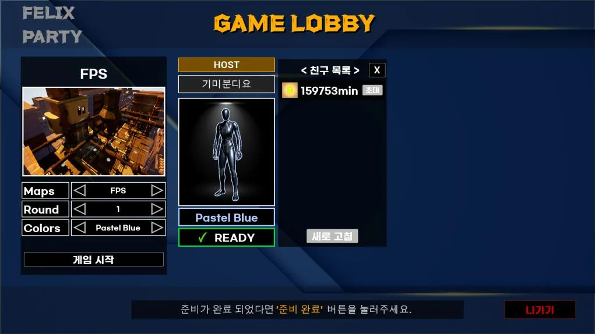
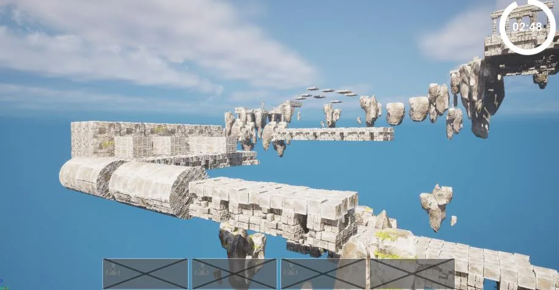
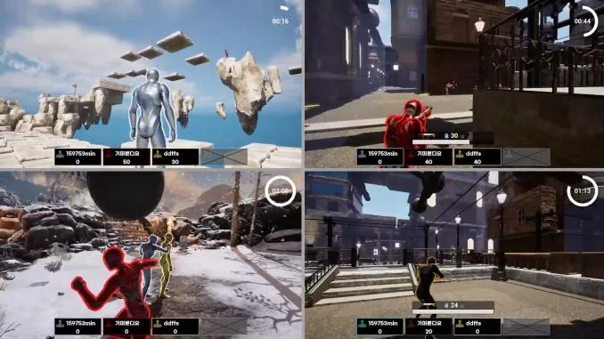
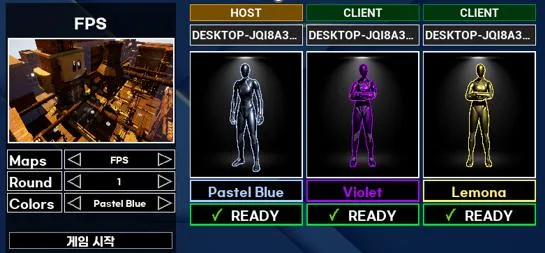
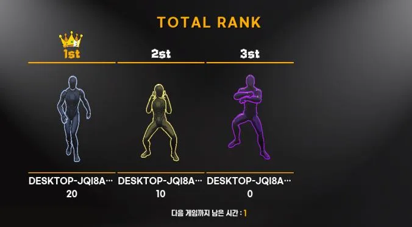

플레이 장면






대표 기능
스팀 친구 초대와 로비
호스트가 방을 만들고 친구를 초대합니다. 맵과 라운드 수를 고르고, 모두 준비되면 시작합니다.
미니게임을 라운드제로
여러 미니게임을 정한 라운드 수만큼 돌고, 순위에 따라 점수를 받습니다.
Only Run · 파쿠르 레이스
장애물 높이에 따라 다른 파쿠르 동작으로 넘으며 먼저 도착하는 게임입니다.
라운드마다 쌓이는 토탈 랭크
레벨이 바뀌어도 플레이어 이름, 색, 점수가 이어집니다.
기억에 남는 문제
클라이언트만 늦게 넘어오던 레벨 이동
로비에서 게임 맵으로 갈 때 클라이언트가 늦게 들어왔습니다. 중간 맵을 두고 연결을 끊지 않는 Seamless Travel로 바꿔 해결했습니다.
구현 방식과 코드는 기술서에 자세히 정리했습니다.